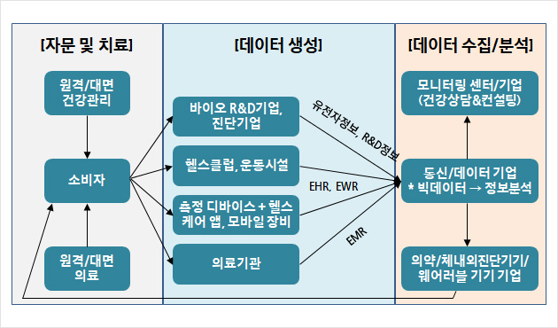

스마트 헬스케어
건강관련 서비스와 의료 IT(인공지능, 빅데이터, 사물인터넷, 클라우드, 나노 등의 기술)가 융합된 종합의료 서비스로서 기존의 헬스케어 영역에서 더 나아가
언제 어디서나 손쉽게 건강관리를 받을 수 있는 개인의 건강과 의료에 관한 데이터와 디바이스, 시스템, 플랫폼을 다루는 신산업 분야입니다.
헬스케어 분야는 전통적인 병원중심의 의료산업 영역에서 정보통신기술을 의료분야에 결합하여 다양한 수요자들에게 보다 편리하고 다양한 형태의 건강 관련 서비스를 제공하기 위한
여러 가지 시도들로 발전되어 왔습니다.
개인의 모바일 기기나 웨어러블 기기, 클라우드 병원정보 시스템 등에서 확보한 생활습관, 신체검진, 의료이용정보, 유전체정보 등을 분석하여 개인맞춤형 건강관리가 가능합니다.
웨어러블 기기는 몸에 부착하거나 착용하여 사용하는 전자기기로, 주변 환경에 대한 상세 정보나 개인의 신체 변화를 실시간으로 수집하여 제공합니다.
스마트 헬스케어 전문가
스마트 헬스케어 전문가는 전문 분야에 따라 나뉩니다. 건강측정기 등 액세서리나 웨어러블 기기를 활용하여
개인이 스스로 운동량, 심전도, 심장박동 등을 체크해 건강을 관리할 수 있는 헬스 케어 서비스를 기획하거나 건강 관리 어플리케이션을 개발하는 일도 있고
제가 하고싶은 빅데이터를 분석하여 실제 헬스케어 서비스를 운영하는 일도 있습니다.
관련 분야로는 스마트 헬스케어 기기 개발/생산 업체, 빅데이터 분석 전문 업체,
소프트웨어 개발 업체, 의료기관, 의료관련 공공기관 등이 있습니다.
필요 기술로는 어느 정도의 의료 지식과 더불어 IT, 컴퓨터 관련 프로그래밍 기술, 빅데이터 분석 기술이 필요합니다.
스마트 헬스케어 산업의 구조
먼저 헬스케어 수요자 본인의 신체 정보는 스마트 밴드/시계 등 웨어러블 기기를 통해 실시간으로 의료기관, 운동시설 등에 전송됩니다. 이후 이 기관들을 모아진 신체 정보를 데이터 수집과 분석을 전문으로 하는 기관에 전달하고
최종적으로 이 정보에 대한 분석이 이루어지는 과정을 거치게 됩니다.
병원에 내원하여 정밀 진단을 받지 않고도 신체정보가 추적되며 관리됩니다. 특히, 만성 질환 보유자의 경우 만약의 사태가 발생하였을 경우 실시간으로 현재 상태가 해당 기관에 전송되어 긴급 의료지원을 받을 수도 있게 됩니다.

사진 출처 자료: 삼정KPMG, 삼성증권 포트폴리오전략팀
스마트 헬스케어 관련 데이터
헬스케어 관련 데이터는 여러 종류가 있습니다. 환자의 진료기록 정보, 유전분석정보, 스마트 기기 등을 통해 수집되는 생체정보, 질병과 관련된 가족력,
공공기관에 저장된 개인의 건강 및 검진정보 등과 같은 데이터들이 다양한 관리 주체별로 정보들을 수집하고 저장하고 있습니다. 특히 최근에는 스마트폰이나
다양한 웨어러블 디바이스의 등장으로 대량의 데이터가 비구조화된 향태로 쏟아져 나오고 있으며
데이터의 종류, 양, 생성 속도가 급증하고 있습니다.
헬스케어 데이터를 관리하는 주체에 따라 구분해보면 유전체 정보, 개인건강 정보, 전자의무기록, 국민건강정보로 크게 네 가지로 나눌 수 있습니다.
개인 유전 정보
개인 유전 정보는 인간이 태어날 때부터 부모에게 물려받은 고유한 정보 데이터로 한 사람당 약 30억 개, 1TB에 달하는 유전체 염기쌍 서열을 가지고 있습니다.
이와 같은 유전체 정보는 정밀의료, 개인 맞춤형 신약 개발, 유전자 편집, 합성 생물학을 구현할 핵심 열쇠로 최근에는 각 국가별로 이 염기쌍의 서열을 밝혀내고
이를 빅데이터로 구축하기 위해 인간게놈 프로젝트를 진행하고 있습니다.
개인 유전 정보는 질병연구와 정밀의료의 핵심으로, 개인의 유전체를 분석하면 가장 적합한 약물과 치료방법을 선택할 수 있습니다. 개인은 각자 다른 유전적, 환경적 요인과
질병경력, 생활습관을 가지고 있는데, 개인 유전 정보를 분석하고 이를 다른 다양한 개인 빅데이터와 함께 분석하면 환자에게 적정한 약과 용량으로 알맞은 시기에 환자별로 최적화된 치료법을 제공할 수 있습니다.
뿐만 아니라 유전적 요인에 따른 취약 질병도 미리 파악해 예방할 수 있습니다. 이처럼 정밀의료와 사전관리를 위해서는 개인 유전체 분석 정보와 과거병력, 치료전력, 생활습관 등
환자 유래 데이터의 수집과 분석이 필수적입니다.
최근에는 정보통신기술과 유전체 분석 기술을 융합하여 적극활용하고 방대한 환자의 의료정보를 빅데이터로 관리하고 연결함으로써
치료의 정확도가 높아지고 있습니다.
개인건강정보
최근 발전된 IT 기술을 바탕으로 다양한 헬스케어 기기와 서비스가 등장하고 있습니다.
환자는 물론 건강한 사람까지도 스마트폰, 웨어러블 디바이스 등의 기기를 활용하여 자신의 건강을 스스로 관리하고 질환을 예방하는 노력이 증가함에 따라
이를 위한 개인건강정보에 대한 관심과 활용도가 높아지고 있습니다.
개인건강정보란 기관이 주체가 되어 건강관리를 하는 것이 아니라 개인 스스로 건강을 관리하는 시스템을 의미합니다.
다시 말해 웨어러블 디바이스나 헬스케어 앱 등을 통해 수집되는 개개인의 혈당 수치, 혈압, 심전도, 식단 정보 등 개인 일상생활 활동에 관한 모든 데이터를 취합해
사용자 스스로 열람하고 관리할 수 있는 것을 말합니다.
최근 들어 치료에서 예방으로 의료 패러다임이 변화함에 따라 소비자들도 스스로의 건강관리에 대한 관심이 더욱 늘어나고 있습니다.
다양한 헬스케어 기기들을 통해 생성된 개인의 건강상태 및 생활습관에 대한 정보들을 개인건강정보에 입력하고, 의료기관에 보관된 개인의 의무기록과 같은 정보를
연계할 때 건강 예방에 대한 시너지는 극대화될 것으로 전망됩니다.
전자의무기록
전자의무기록은 일반적으로 하나의 병원 내에서 생성되는 모든 진료정보, 다시 말해 각 부서에서 나오는 진단결과, 처방결과, 약제 처방자료, 인사과 기록, 비용 등의 원무자료,
외래 자료 등 모든 환자 정보를 전산화하여 입력한 후 관리하고 저장하는 것을 말합니다. 최근 IT 기술을 접목하여 디지털 병원을 구축하는 핵심 기술로 활용되고 있습니다.
전자의무기록은 4차 산업혁명 기술과 함께 유전체 정보와 생활 습관 정보 등과 결합되면 개개인에게 맞춤형 의료 서비스를 제공하는 정밀의료의 근간이 될 것입니다.
하지만 높은 수준의 전자의무기록 시스템을 구축하고 있는 병원은 일부 상급 종합병원에 불과합니다. 따라서 일부 상급 종합병원을 제외한 대부분의 의료기관은 의료기관 형태 및 규모,
투자 여력, 사용자 수준 등에 따라 사용하고 있는 시스템에 큰 편차가 있는 것이 현실이고, 각 의료기관별로 개별적 요구에 따라 의료정보시스템 개발이 이루어지고 있어
프로세스 표준화, 호환적 사용, 지속적 유지보수 서비스 등에 어려움을 겪고 있습니다.
국민건강정보
우리나라의 국민건강보험은 모든 의료 공급자와 전 국민이 의무적으로 가입해야하는 강제성을 가지고 있으며 국민건강보험공단이라는 단일한 보험자로 이루어져 있습니다.
그러므로 전 국민의 의료 이용 급여 내역이 상세 의료행위, 치료 재료, 약제 등의 형태로 빠짐없이 축적되고 있어 빅데이터를 구축하는데 해외에 비해 더할 나위 없는 장점으로 작용하고 있습니다.
뿐만 아니라 다른 국가와 다르게 전 국민을 대상으로 건강검진서비스제도를 운영하고 있습니다. 이에 따라 매년 1천 만 명이 넘는 국민들의 혈압, 혈당, 중성지방, 콜레스테롤까지 측정하여 데이터를 측적하고 있습니다.
현재 국민건강보험공단에서는 개인별 맞춤형 건강관리 프로그램 '건강 IN'을 제공하고 있어 데이터를 바탕으로 검증된 로직에 기반을 두어 개인별 질병에 대한 위험평가를 수행하고 개선 프로그램 및 처방 메시지를 제공하고 있습니다.
출처 자료: 삼정KPMG
스마트 헬스케어 최근 동향 및 관련 기업
스마트 헬스케어의 전망은 밝아 보입니다. 한 기사에 따르면
2022 CES(소비자 가전 전시회)에서 헬스케어 관련 전시를 전면에 배치하고 의료 업체가 기조연설을 진행하는 등 위상이 높아졌다고 합니다.
기존에 IT업계에서 부차적으로 여겨왔던 헬스케어 산업이 드디어 전면으로 나오게 된 것입니다.
또 스마트 헬스케어 전문가는 한국고용정보원에서 발표한 미래 유망직업 15개 중 하나로 채택되었습니다.
이에 따라 IT 대기업들도 병원, 제약회사 등과 제휴하여 활발하게 헬스케어 시장에 진출하고 있습니다.
대기업 헬스케어 사업 추진 현황을 살펴 보겠습니다.
AI 음성인식 기술로 효율적이고 체계적인 진료, 네이버
네이버는 200평 규모의 사내병원을 오픈한다고 밝혔습니다. 해당 병원의 가장 큰 특징은 AI 클라우드 기술 '클로바'를 활용하여 음성을 통해
전자의무기록을 작성하고 진료를 진행한다는 것입니다. 이렇게 되면 불필요한 문서작업과 접촉을 줄이고 데이터를 통해 체계적 진료가 가능해집니다.
네이버는 해당 헬스케어 산업을 온라인 의료상담 및 처방약 배달 등의 서비스를 제공하는 미국의 아마존 케어에 빗대어 표현하기도 했는데 이로 미루어 보았을 때,
사내 병원을 테스트베드로 삼아 차후에 사업화 할 계획인 것으로 보입니다.
헬스케어 사업 전담 CIC 설립, 카카오
카카오는 디지털 헬스케어 사업을 전담할 CIC를 설립했다. 인공지능과 첨단기술을 바탕으로 국내외 헬스케어 사업을 본격화하겠다는 것입니다.
카카오는 2019년 아산병원과 제휴하여 아산카카오메디컬센터를, 연세의료원과 제휴하여 파이디지털헬스케어를 설립했습니다.
이외에도 맞춤형 영양제 판매 스타트업, 희귀난치성 질환 환자들의 치료 기회를 확대하는 휴먼스케이프 등 다양한 헬스케어 산업에 투자하며 역량을 키워오고 있습니다.
이번 CIC 설립으로 헬스케어를 사업의 전면으로 내세운 만큼 앞으로 카카오의 행보가 주목됩니다.
가전기기를 통한 생활 속 헬스케어, LG전자
LG전자는 2022년에 상용화를 목표로 통합 헬스케어 플랫폼을 개발했습니다. 해당 플랫폼은 자사의 가전기기와 웨어러블 기기를 활용해
데이터를 수집하고 AI 클라우드 기술을 통해 맞춤 솔루션을 제공을 목표로 합니다. LG는 스타일러, 건조기, 식기세척기 등 다양한 가전기기를 활용하여
당뇨관리, 운동제안, 안전예방 등의 건강관리 방법을 제안하는 방식으로 헬스케어 산업을 발전시키고 있습니다.
이외에 한양대 병원과 MOU를 체결하고 통증완화 기기인 메디페인을 개발하는 등 직접적 헬스케어 분야까지 진출을 위해 힘쓰고 있는 것으로 보입니다.
갤럭시워치를 통한 원격의료까지, 삼성
삼성전자는 스마트워치인 갤럭시워치를 필두로 헬스케어 사업을 발전시켜 나가고 있습니다. 특히 갤럭시워치4는 헬스모니터링, 피트니스, 수면관리 등 다양한 헬스케어 기능을 제공하고
바이오액티브 센서를 통해 혈압, 심전도 등을 바로 측정할 수 있다는 점에서 의의가 큽니다.
갤럭시워치4에 생체 모니터링 시스템을 시범 적용하여 테스트하였고 미국의 원격의료 스타트업인 알파메디컬에 투자하는 등 원격진료 분야까지 진출하기 위한 노력을 아끼지 않고 있습니다.